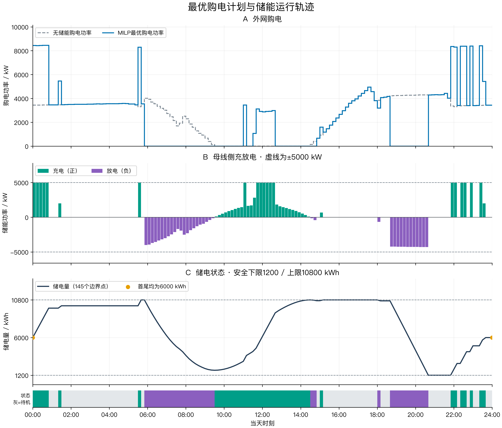
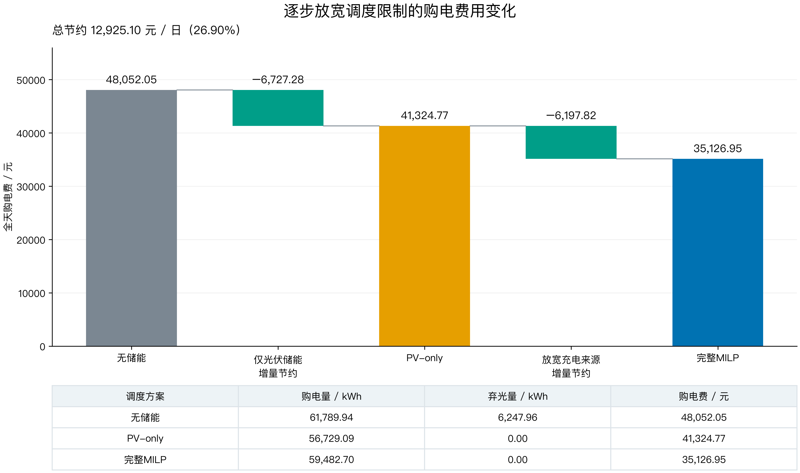
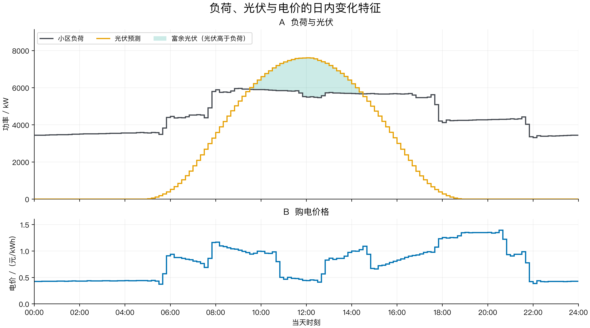
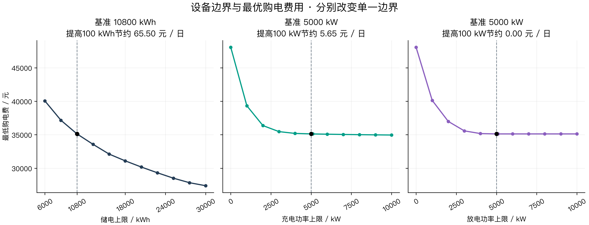
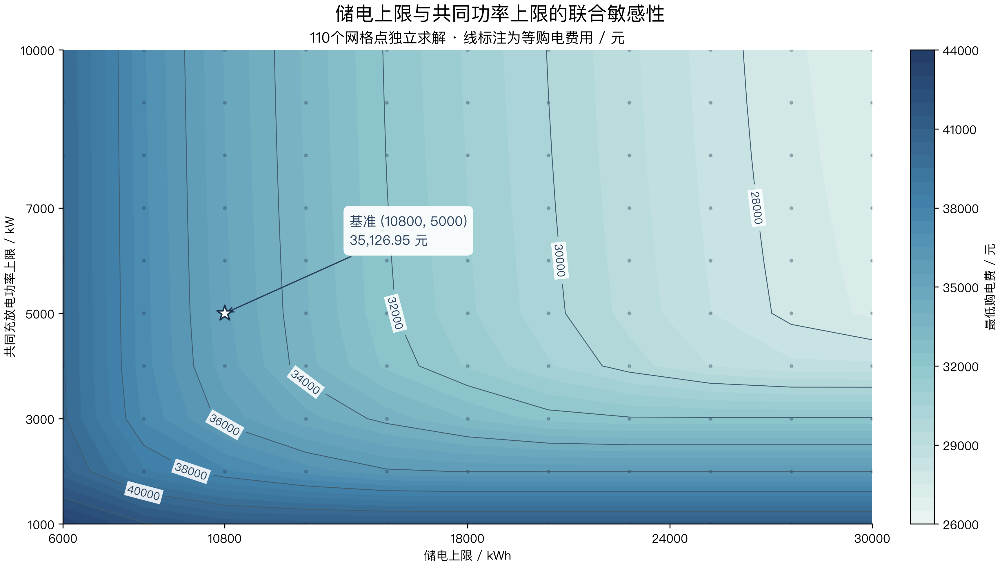
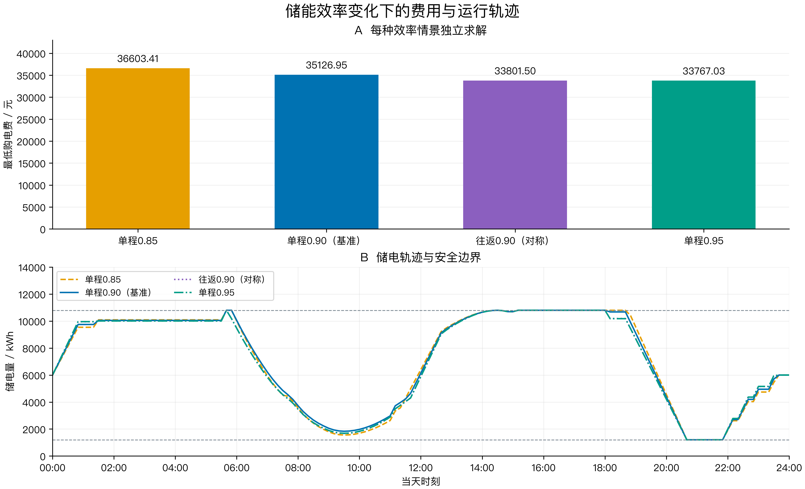
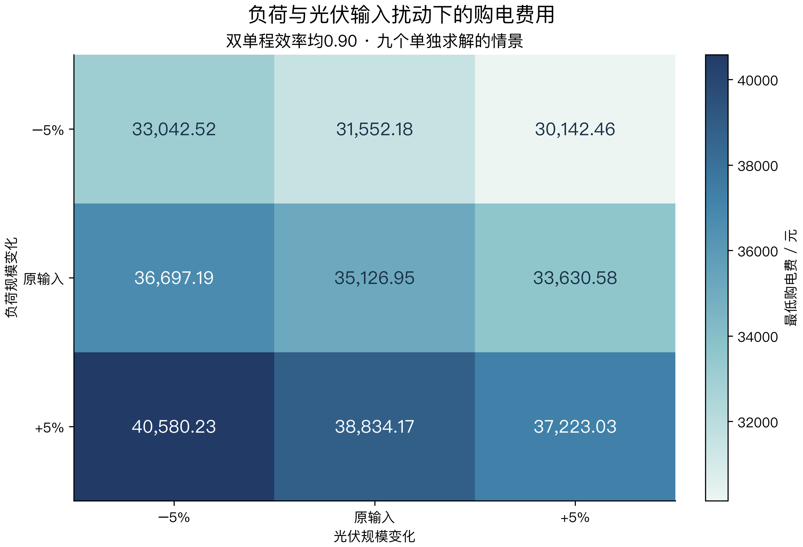
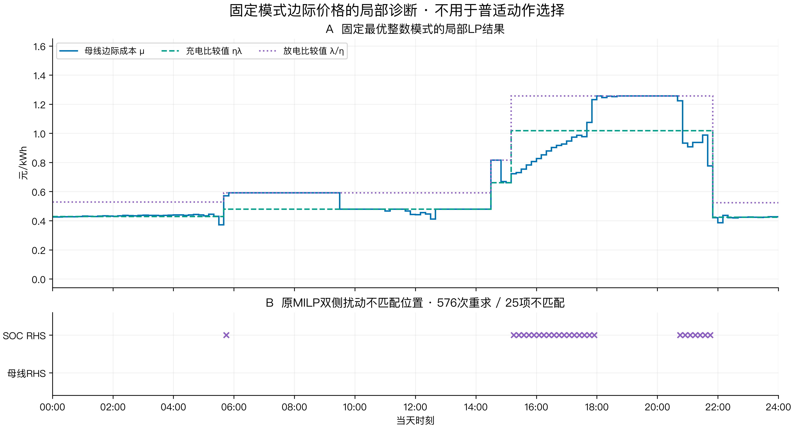

第一问论文图集
核心运行结果为必选，费用对比建议放正文，其余按论证需要选用。共8张图；PNG为300 dpi，SVG中文转为矢量路径。数据表全部为CSV。图目索引 · 集中管理的绘图脚本
实验口径：Emin=1200 kWh、首尾6000 kWh、两侧效率0.9。设备扫描仅改变指明的边界；Emax为储电上限，超过原额定容量的值仅用于数学约束放宽实验，不作设备投资结论。
最优购电计划与储能运行轨迹
必选：核心结果 · 无储能与最优购电功率共享纵轴；充电向上、放电向下，限值为±5000 kW；145个储电量点含日初状态。状态条依据实际C、D及1e-6 kWh容差判定。
PNG · SVG · dispatch_power.csv · storage_145.csv

逐步放宽调度限制的购电费用变化
建议：结果解释 · 中间基准为仅吸收富余光伏的储能方案；两项节约依赖这一嵌套顺序，不能解释为唯一的光伏收益与套利收益分解。
PNG · SVG · cost_waterfall.csv · baseline_metrics.csv

负荷、光伏与电价的日内变化特征
可选：背景说明 · 负荷与光伏采用144段阶梯线；浅绿区域仅表示光伏超过负荷的部分。电价独立成面板，不使用双纵轴或预测置信区间。
PNG · SVG · data_features.csv

设备边界与最优购电费用
可选：瓶颈分析 · 每条曲线只改变横轴对应边界，其余设备参数保持基准。圆点全部为独立MILP求解值；连接线仅帮助阅读。
PNG · SVG · device_one_dimensional.csv

储电上限与共同功率上限的联合敏感性
可选：联合敏感性 · 110个网格点分别求解MILP，二维纵轴同时改变充、放电功率。等值线在网格之间作绘图插值；储电上限放宽实验不等同于实际扩容投资分析。
PNG · SVG · device_joint_grid.csv

储能效率变化下的费用与运行轨迹
可选：效率稳健性 · 四种效率情景独立求解；往返0.90采用两侧效率均为sqrt(0.90)，不得与单程0.90混用。
PNG · SVG · efficiency_metrics.csv · efficiency_storage.csv

负荷与光伏输入扰动下的购电费用
可选：输入稳健性 · 固定两侧效率0.90，只展示已计算的九组负荷、光伏−5%、0、+5%扰动。每格标注费用，不冒充设备二维敏感性。
PNG · SVG · input_sensitivity.csv

固定模式边际价格的局部诊断
备查：局部诊断，不建议放正文 · 固定整数模式的LP影子价格属于局部诊断。与原MILP双侧扰动的对照数量及不匹配位置见图，不能据此直接生成普适充停放策略。
PNG · SVG · fixed_mode_marginals.csv · milp_rhs_checks.csv
